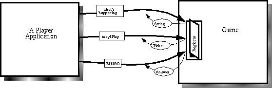

Feedback Form
|
|
Start of Tutorial > Start of Trail > Start of Lesson |
Search
Feedback Form |
During its life, the Player application needs to make three different kinds of requests of the Game application.The nature of these requests dictates the following:
- When the Player application first starts up, it needs to ask the Game for status.
- To join the next game, the Player must send a request to the Game.
- When the player detects a BINGO, the Player must notify the Game.
All of this leads us to Remote Method Invocation, a feature of the JDK that allows code in one application to invoke the methods of an object resident in another application. The object whose methods are invoked is known as a remote object. The methods invoked are called remote methods.
- The Player must initiate the communication.
- The Game must be able to send a reply.
- The channel must be reliable and point-to-point.
In BINGO, the Game application contains the remote object (which we call the "Registrar") and the Player calls its remote methods. This satisfies the above requirements in that the Player initiates the communication (by invoking a method), the Game can send a reply (via the method's return value), and the channel is reliable and point-to-point (because RMI is implemented using TCP).
The next section talks about the code that glues the remote methods on the Game side to the remote method calls on the Player side. The two sections following that describe the RMI code in the Game and the RMI code in the Player, respectively.
The Game's remote methods that can be called from the Player are codified in thebingo.shared.Registrarinterface shown here:
As you can see, the interface contains one method per request that can be made by the Player. Each method has a different type of return value that contains the Game's response.package bingo.shared; import java.rmi.*; public interface Registrar extends Remote { public String whatsHappening() throws RemoteException; public Ticket mayIPlay(String playerName, int numCards, long seed) throws RemoteException; public Answer BINGO(int playerID, Card c) throws RemoteException; } The method declarations for remote methods look just like method declarations for "regular" methods: they have return values, arguments lists, and so on. However, these method declarations are different in that they contain a
This figure has been reduced to fit on the page.
Click the image to view it at its natural size.throws RemoteExceptionclause at the end. This identifies them as remote methods. All remote methods may throw aRemoteExceptionand so, must have thisthrowsclause.While not apparent from the code in the
Registrarinterface, the arguments and the return value of the remote methods must beSerializable. That is, the types of the arguments and return value of a remote method must either be primitive types, or if a reference type, then the class [PENDING: check about interfaces] or interface must implement theSerializableinterface.The
whatsHappeningmethod returns aStringwhich like many of the classes in thejava.*packages areSerializable. ThemayIPlaymethod returns anbingo.game.TicketAnswermethod returns anbingo.game.AnswerFor information about object serialization, see Object Serializationimplements Serializable.
Now let's look at the code in the Game that supports RMI.
Thebingo.game.RegistrarImplRegistrarinterface and consequently the Game's response to each of the Player's requests. This class implements the Game's remote object and its remote methods.Here are the relevant lines of code from
RegistrarImpl:You'll note that the constructor for theclass RegistrarImpl extends UnicastRemoteObject implements Registrar, Constants { RegistrarImpl (RingMaster ringMaster) throws RemoteException { . . . } public String whatsHappening() throws RemoteException { . . . } public Ticket mayIPlay(String playerName, int numCards, long seed) throws RemoteException { . . . } public Answer BINGO(int playerID, Card c) throws RemoteException { . . . } }RegistrarImplclass throws aRemoteExceptionbecause the creation of any remote object may result in aRemoteException.The Game's
mainmethod, which appears in theBINGORegistrarImpland registers it for RMI with this code:TheSystem.setSecurityManager(new RMISecurityManager()); // within a try clause . . . ringMaster = new RingMaster(); RegistrarImpl registrar = new RegistrarImpl(ringMaster); hostname = InetAddress.getLocalHost().getHostName(); Naming.rebind("//" + hostname + "/Registrar", registrar); . . .RegistrarImplobject is registered as a remote object under the name of//hostname/Registrar(wherehostnameis the name of the machine on which the Game program is running).
To invoke methods on theRegistrarImplobject that was instantiated in the Game application, the Player needs two pieces of information:With these two pieces of information, the Player can get an object reference to the
- The interface that defines the remote object's remote methods (
RegistrarImpl). From the Player's perspective, this interface is the data type of the remote object.- The name under which the remote object registered for RMI. Remember that this includes the hostname on which the Game is running. By default, the Player uses the hostname on which the Player is running. To play with a Game on another host, the user must type a different hostname into the textfield provided in the Player's GUI.
RegistrarImplobject that was instantiated in the Game. Here's the relevant code from thePlayerThe code declares a member variable,Registrar registrar; . . . registrar = (Registrar)Naming.lookup("//" + host + "/Registrar");registrar, whose type isRegistrar--the interface that defines all of the Game's remote methods. Next, the code looks up the remote object by name and assigns it to theregistrarvariable.After these two lines of code have been successfully executed,
registraris an object reference to theRegistrarImplobject in the Game application. Through theregistrarreference the Player can invoke methods just like with any other object reference--the difference is that the object referred to resides in a separate VM. The Player invokes methods onregistraron three separate occasions:This has been a description of how the Game and the Player applications use RMI to communicate. This has not been a discussion of RMI in general. For general RMI documentation see [PENDING].
- When the Player application first starts up, it queries the Game for the game status with this line of code:
statusText = registrar.whatsHappening();- To join the next game, the Player calls
mayIPlay:ticket = registrar.mayIPlay(nameField.getText(), numCards, seed);- When the player detects a BINGO, the player notifies the Game by calling the
BINGOmethod:Answer a = registrar.BINGO(ticket.ID, event.getCard());
|
|
Start of Tutorial > Start of Trail > Start of Lesson |
Search
Feedback Form |